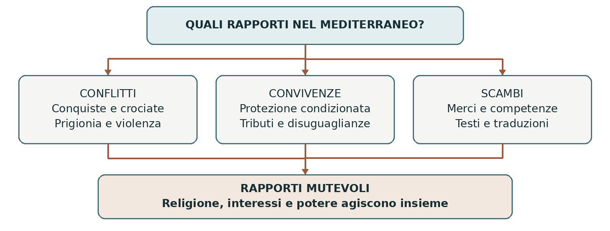

VII–XIII secolo • Conflitti, convivenze e scambi nel Mediterraneo
Musulmani e cristiani
Nel Medioevo cristiani e musulmani combatterono guerre, conclusero alleanze, commerciarono e tradussero libri. Nessuna di queste esperienze, da sola, descrive l’intero rapporto. Questo approfondimento segue il Mediterraneo, la penisola iberica e la Sicilia, con un collegamento alla comunità musulmana di Lucera.
0. Domanda generatrice
Come potevano convivere guerra religiosa, collaborazione politica e scambio culturale?
In sintesi Le appartenenze religiose contavano, ma non determinavano da sole tutti i comportamenti. Interessi economici, potere e condizioni locali modificavano i rapporti.
1. Il mondo precedente
Il cristianesimo e l’islam sono religioni monoteistiche, ma attribuiscono significati diversi a figure e testi condivisi. Per i cristiani Gesù è il Cristo e, nelle confessioni maggioritarie, il Figlio di Dio; per i musulmani è un profeta, mentre Muhammad è l’ultimo profeta. Il Corano e la Bibbia non sono quindi testi intercambiabili. Comprendere le differenze aiuta a evitare sia ostilità stereotipate sia somiglianze forzate.
Nel VII secolo l’espansione dei poteri islamici trasformò regioni già appartenute agli imperi bizantino e sasanide. Le conquiste non produssero un’immediata conversione di tutti gli abitanti: comunità cristiane ed ebraiche continuarono a vivere nei territori governati da musulmani. Anche il mondo cristiano era diviso tra poteri politici e tradizioni ecclesiastiche differenti.
In sintesi Non esistevano due società compatte: ogni area comprendeva gruppi, lingue e interessi diversi.
2. Le fratture
L’espansione islamica raggiunse la penisola iberica dall’711; la conquista musulmana della Sicilia iniziò nell’827. Nei secoli successivi l’avanzata dei regni cristiani iberici e la conquista normanna dell’isola modificarono le frontiere. Il cambiamento del sovrano non implicava sempre l’espulsione immediata di chi professava un’altra religione.
Le crociate, avviate alla fine dell’XI secolo, attribuirono un particolare valore religioso alla guerra per i
luoghi santi. Anche il concetto islamico di jihad poteva giustificare la lotta armata, pur avendo significati
più ampi di questa sola dimensione. Assedi, massacri, schiavitù e riscatti colpirono popolazioni di
entrambe le fedi; nello stesso tempo continuarono negoziati e commerci.
In sintesi La religione poteva legittimare il conflitto, ma le frontiere restavano luoghi di contatto e di scambio.
3. Attori, gruppi e conflitti
Accanto ai sovrani, agirono mercanti, traduttori, artigiani e minoranze sottoposte a regole differenti.
| Attori | Obiettivi e interessi |
|---|---|
| Sovrani e comandanti | Cercano territori, sicurezza e legittimazione; possono allearsi anche con governanti di un’altra fede. |
| Comunità religiose | Difendono culto, istituzioni e mezzi di vita; la loro posizione cambia secondo luogo e regime. |
| Mercanti e marinai | Collegano porti e mercati attraverso accordi, intermediari e rischi di cattura. |
| Studiosi e traduttori | Trasmettono e rielaborano testi con l’aiuto di competenze greche, arabe, ebraiche e latine. |
In sintesi Per capire i rapporti tra le fedi bisogna osservare chi entra in contatto e in quali condizioni di potere.
4. Il processo storico
Convivenza non significa uguaglianza
Nei territori islamici molti cristiani ed ebrei vivevano come dhimmi, comunità protette sottoposte a tributi
e limitazioni. Potevano conservare forme di culto e organizzazione interna, ma non godevano di diritti
identici a quelli dei musulmani. Le regole e la loro applicazione variarono molto nel tempo.
Anche nei regni cristiani la permanenza di musulmani ed ebrei poteva essere regolata da privilegi, imposte
e restrizioni. Nella penisola iberica si chiamano mudéjares i musulmani rimasti sotto dominio cristiano.
La convivenza non era necessariamente pacifica e non equivaleva alla libertà religiosa contemporanea:
poteva essere interrotta da persecuzioni, espulsioni o conversioni forzate.
Le vie del commercio e del sapere
I porti mediterranei collegavano territori in guerra e in pace. Spezie, tessuti, metalli e persone attraversavano il mare; tra le persone vi erano anche prigionieri e schiavi. Gli accordi commerciali potevano sopravvivere a ostilità politiche, perché governi e mercanti avevano interesse a mantenere entrate e approvvigionamenti.
Tra XII e XIII secolo centri come Toledo favorirono traduzioni dall’arabo al latino, talvolta attraverso più lingue. Furono trasmessi testi greci, ma anche elaborazioni originali di studiosi del mondo islamico in medicina, matematica e filosofia. Non fu un semplice “salvataggio” di libri antichi: commenti, discussioni e nuove conoscenze modificarono il patrimonio ricevuto.
Dalla Sicilia normanna a Lucera
I Normanni conquistarono la Sicilia tra 1061 e 1091. Nel regno di Ruggero II operarono persone di lingua
greca, latina e araba; l’arte di corte combinò tradizioni differenti. Questa pluralità dipendeva anche dalla
volontà del sovrano e dall’utilità delle competenze disponibili: non prova un’uguaglianza generale tra gli
abitanti.
Nel Duecento Federico II represse ribellioni musulmane in Sicilia e trasferì gruppi di abitanti a Lucera, a
partire dagli anni Venti. La comunità conservò luoghi e pratiche religiose e fornì soldati e servizi al
sovrano, entro una dipendenza stretta. L’insediamento nacque dunque da deportazioni, non da una libera
migrazione protetta. Nel 1300, sotto Carlo II d’Angiò, fu distrutto e molti abitanti furono ridotti in
schiavitù.
In sintesi La collaborazione culturale poteva coesistere con subordinazione giuridica, coercizione e guerra.
Lo snodo decisivo
Lucera rende visibile il doppio volto della protezione sovrana: consentiva una vita comunitaria, ma restava legata alle esigenze politiche e militari di chi governava.
5. Le fonti in dialogo
Un mantello regale con un’iscrizione araba
Il mantello realizzato nelle officine regie di Palermo nel 1133–1134 per Ruggero II è conservato a Vienna. Il museo ne documenta materiali, decorazione e iscrizione araba.
Contenuto — sintesi didattica: L’oggetto unisce la regalità di un sovrano cristiano a un linguaggio artistico e celebrativo arabo. L’iscrizione ricorda il luogo e la data della manifattura secondo il calendario islamico.
Interpretazione e limiti: È una testimonianza della corte e delle sue officine, non un ritratto completo della società siciliana. Da un manufatto prestigioso non possiamo dedurre la condizione giuridica di tutti i musulmani.
Domanda di lettura: Che cosa prova questo oggetto sugli scambi culturali? Che cosa non permette di affermare sulla convivenza?
Fonte materiale: mantello di Ruggero II — Kunsthistorisches Museum
In sintesi Una fonte può documentare un incontro culturale senza dimostrare l’assenza di conflitti o disuguaglianze.
6. Conseguenze e nuovo assetto
Gli scambi contribuirono a trasformare tecniche, conoscenze, gusti e linguaggi del Mediterraneo. Le culture si svilupparono anche attraverso contatti con persone di altra fede. Le guerre, invece, produssero distruzioni, prigionia e immagini ostili dell’avversario.
La formula “scontro di civiltà” è troppo rigida per spiegare ogni alleanza e ogni esperienza. Anche un’immagine di armonia permanente è falsa. Lo storico ricostruisce equilibri locali, distingue élite e popolazioni e segue i cambiamenti delle condizioni di convivenza.
In sintesi Conflitto e scambio appartengono alla stessa storia e devono essere studiati insieme.
7. Conclusione
Guerra, alleanze e collaborazione coesistevano perché gli individui appartenevano anche a città, dinastie, professioni e reti economiche. La fede orientava scelte e istituzioni, ma non cancellava tutti gli altri interessi.
Sintesi finale Cristiani e musulmani formavano mondi internamente diversi. Le conquiste non determinarono conversioni immediate e uniformi. La convivenza era spesso gerarchica e condizionata. Commercio e traduzioni attraversavano le frontiere. Lucera mostra il legame tra protezione, utilità politica e coercizione.
Per studiare e collegare
Coordinate essenziali
Mediterraneo, penisola iberica, Sicilia e Capitanata. Dall’espansione islamica del VII secolo alla fine della comunità musulmana di Lucera nel 1300.
Saperi irrinunciabili
1. Islam e cristianesimo hanno differenze teologiche fondamentali.
2. Musulmano e arabo non sono sinonimi.
3. I mondi cristiano e islamico erano politicamente divisi.
4. Dhimma indicava protezione accompagnata da subordinazione.
5. Mudéjares erano musulmani sotto dominio cristiano in Iberia.
6. Le crociate non interruppero tutti gli scambi.
7. Gli studiosi del mondo islamico produssero anche conoscenze originali.
8. La Sicilia normanna ebbe una corte culturalmente composita.
9. I trasferimenti federiciani a Lucera furono coercitivi.
10. Nel 1300 la comunità musulmana lucerina fu distrutta.
Mappa concettuale

Le tre dimensioni possono essere presenti nello stesso luogo e nello stesso periodo.
Strumenti e attività
Linea del tempo ragionata
| Quando | Che cosa cambia |
|---|---|
| VII secolo | L’espansione islamica modifica il Mediterraneo. |
| 711 / 827 | Iniziano le conquiste musulmane in Iberia e Sicilia. |
| 1061–1091 | Conquista normanna della Sicilia. |
| 1095–1099 | Prima crociata e nascita di nuovi poteri in Oriente. |
| XII–XIII secolo | Traduzioni, scambi e trasferimenti di musulmani a Lucera. |
| 1300 | Fine violenta della comunità musulmana di Lucera. |
Vocabolario essenziale
Dhimmi. Non musulmano protetto, con obblighi e inferiorità giuridica.
Mudéjar. Musulmano rimasto sotto dominio cristiano nella penisola iberica.
Jihad. Impegno sulla via di Dio; comprende significati religiosi e, in certi contesti, militari.
Deportazione. Trasferimento forzato di una popolazione.
Attività di comprensione
1. Confronta protezione di una minoranza e uguaglianza dei diritti.
2. Spiega perché il mantello di Ruggero II non prova da solo una società tollerante.
3. Ricostruisci il caso di Lucera distinguendo origine, funzionamento e fine della comunità.
Fonti e approfondimenti
Approfondimento di storia per la classe terza. Fonti e studi per verificare e ampliare la lettura.
Treccani — Dhimmi
Treccani — Saraceni di Sicilia
Museum With No Frontiers — Mantello di Ruggero II